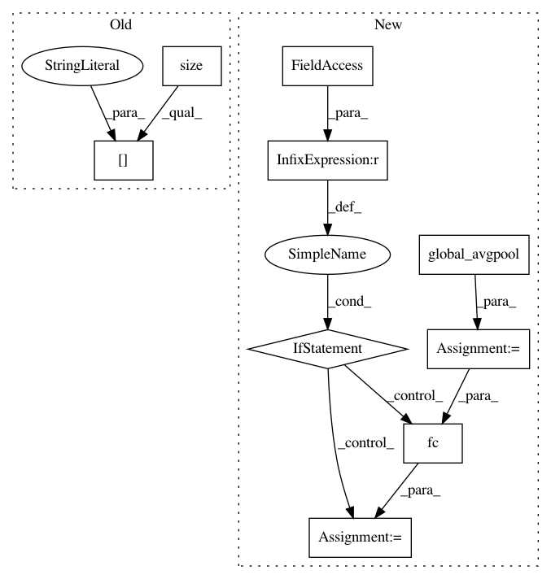

710b9ac1a28d418bddc41aeeda320ab4de4d17fe,torchreid/models/resnet.py,ResNet50,forward,#ResNet50#Any#,22
Before Change
def forward(self, x):
x = self.base(x)
x = F.avg_pool2d(x, x.size()[2:])
f = x.view(x.size(0), -1)
if not self.training:
return f
After Change
def forward(self, x):
f = self.featuremaps(x)
v = self.global_avgpool(f)
v = v.view(v.size(0), -1)
if self.fc is not None:
v = self.fc(v)
if not self.training:
return v
y = self.classifier(v)
In pattern: SUPERPATTERN
Frequency: 3
Non-data size: 9
Instances
Project Name: KaiyangZhou/deep-person-reid
Commit Name: 710b9ac1a28d418bddc41aeeda320ab4de4d17fe
Time: 2018-10-26
Author: k.zhou@qmul.ac.uk
File Name: torchreid/models/resnet.py
Class Name: ResNet50
Method Name: forward
Project Name: KaiyangZhou/deep-person-reid
Commit Name: 7ff331f871b563d1dbb36472de28d1a692d8b4af
Time: 2019-03-05
Author: k.zhou@qmul.ac.uk
File Name: torchreid/models/mobilenetv2.py
Class Name: MobileNetV2
Method Name: forward
Project Name: KaiyangZhou/deep-person-reid
Commit Name: 35235fe4bbe183e6613884e4dbf445e009ef6f31
Time: 2018-10-27
Author: k.zhou@qmul.ac.uk
File Name: torchreid/models/densenet.py
Class Name: DenseNet121
Method Name: forward